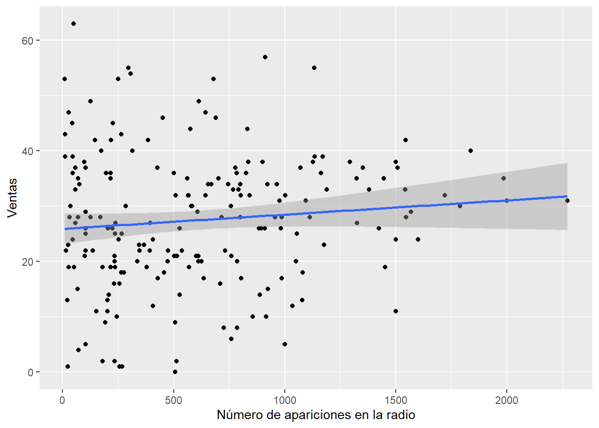
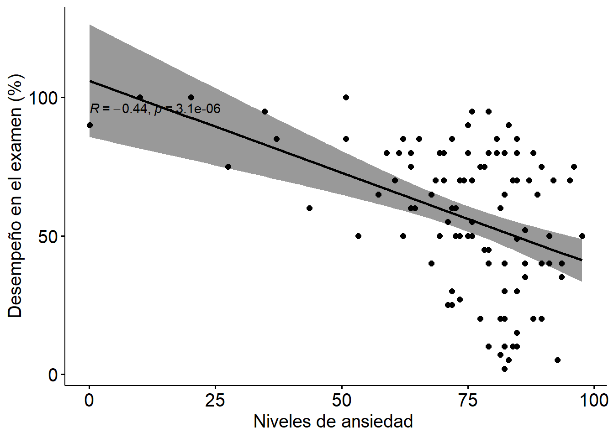

Capítulo 6 La regresión
En este capítulo vamos a revisar el bloqueda fundamental de la estadística tradicional: la regresión.
6.1 Modelos estadísticos
Revisa este video (17') y trata de responder:
- ¿Qué es un modelo estadístico?
- ¿Por qué es importante tener buenos modelos?
- ¿Cómo de determina el error en un modelo?
- ¿Qué son los grados de libertad?
6.2 La ecuación de la recta
Revisa este video (8') y trata de responder:
- ¿Cómo se define la línea de la ecuación de un GLM que se ajuste mejor a los datos?
- ¿Cuál es el modelo más básico con el cual se compara un modelo que uno construya?
6.3 La suma de cuadrados
Revisa este video (14') y trata de responder:
- ¿Qué es la SS total?
- ¿Qué es la SS de los residuales?
- ¿Qué es la SS del modelo?
- ¿Cómo se establece que un modelo dado explica mejor los datos que un modelo básico?
- ¿Cómo se establece cuan bueno es un modelo comparado con cuan malo es? ¿Lo que explica y lo que no explica un modelo?
6.4 La regresión con R
Ahora vamos a hacer un análisis básico de regresión. La regresión es un método estadístico utilizado para predecir el valor de una variable dependiente en función del valor de una o más variables independientes. En el análisis de regresión, se ajusta una línea o curva a los datos (modelo de regresión) y se usa para hacer predicciones de la variable dependiente.
Primero seteamos nuestro directorio de trabajo y cargamos las librerías que necesitemos (si no las tienes instaladas debes instalarlas). Luego importamos el set de datos y le damos una mirada.
setwd("C:/Users/Usuario/Documents/JoseLuis/UTalca_2018/Estadistica_Bookdown/estadistica")
library(ggplot2)
library(car)Imagina que eres manager de un grupo musical y debes definir como invertir parte de tu presupuesto. A lo que aspiras en el fondo esa aumentar la venta de discos. Para ellos pirmero debes evaluar que factores afectan la venta de discos. Uno de estos factores es la cantidad de dineo invertido en la publicidad. En ese sentido, te gustaría saber cuál es la relación entre el dinero invertido en publicidad y el número de discos vendidos.
album1 <- read.csv("data/datos_ventas_de_discos_1.csv", header = TRUE) # load data
head(album1)## publicidad ventas
## 1 10.256 330
## 2 985.685 120
## 3 1445.563 360
## 4 1188.193 270
## 5 574.513 220
## 6 568.954 170Primero graficamos.
ggplot(album1,
aes(publicidad, ventas)) +
geom_point() +
geom_smooth(method = "lm") +
labs(x="Cantidad de dinero gastado en publicidad",
y="Ventas")## `geom_smooth()` using formula 'y ~ x'Lo que nos dice el sentido común, y lo que vemos en el gráfico efectivamente es que a mayor dinero invertido en publicidad debería haber mayores ventas. Es este un buen modelo para predecir el número de ventas a partir del dinero invertido en publicidad? Para analizar estos podemos hacer un modelo lineal con la función lm. En esta función usamos la típica relación entre resultado (ouctome) y variable explicativa (predictor), y le indicamos a R que base de datos usamos (datos): newModel <- lm(outcome~predictor, datos) Luego podemos visualizar los resulatdos con la función summary.
m_album <- lm(ventas ~ publicidad, data = album1)
summary(m_album)##
## Call:
## lm(formula = ventas ~ publicidad, data = album1)
##
## Residuals:
## Min 1Q Median 3Q Max
## -152.949 -43.796 -0.393 37.040 211.866
##
## Coefficients:
## Estimate Std. Error t value Pr(>|t|)
## (Intercept) 1.341e+02 7.537e+00 17.799 <2e-16 ***
## publicidad 9.612e-02 9.632e-03 9.979 <2e-16 ***
## ---
## Signif. codes: 0 '***' 0.001 '**' 0.01 '*' 0.05 '.' 0.1 ' ' 1
##
## Residual standard error: 65.99 on 198 degrees of freedom
## Multiple R-squared: 0.3346, Adjusted R-squared: 0.3313
## F-statistic: 99.59 on 1 and 198 DF, p-value: < 2.2e-16En qué debemos fijarnos dentro de los resultados que obtenemos al aplicar un módelo líneal? En la línea siguientes a "Call" aparece el módelo que usamos. También aparecen los llamados coeficientes que reflejan bajo el nombre de "Estimate" que refleja con que magnitud una variable predictora predice una variable resultado. Por ejemplo, por cada unidad de publicidad invertida el aumento en el número de ventas es 0.09. Y esta relación es significativa, o sea es diferente de 0 (lo que ocurre cuando no hay ninguna relación entre ambas variables).
En el fondo este análisis nos dice que la publicidad si impacta sobre la venta de los discos. Sin embargo, a publicidad no es el único que podría afectar las ventas. En este sentido, podríamos estudiar otros factores que afectan esta variable resultados. Para ello hacemos lo que se llama una regresión múltiple.
Primero cargamos los datos.
album2 <- read.csv("data/datos_ventas_de_discos_2.csv", header = TRUE) # load data
head(album2)## publicidad ventas radio eventos
## 1 10.256 330 43 10
## 2 985.685 120 28 7
## 3 1445.563 360 35 7
## 4 1188.193 270 33 7
## 5 574.513 220 44 5
## 6 568.954 170 19 5Podemos graficar la relación entre alguna variable de interés y el número de ventas. Por ejemplo, podríamos visualizar el impacto de la frecuencia de aparición de un tema musical en la radio.
ggplot(album2,
aes(publicidad, radio)) +
geom_point() +
geom_smooth(method = "lm") +
labs(x="Número de apariciones en la radio",
y="Ventas")## `geom_smooth()` using formula 'y ~ x'
Luego podríamos hacer un modelo para entender el impacto de distintos factores en la venta de discos.
m_album2 <- lm(ventas ~ publicidad + radio + eventos, data = album2)
summary(m_album2)##
## Call:
## lm(formula = ventas ~ publicidad + radio + eventos, data = album2)
##
## Residuals:
## Min 1Q Median 3Q Max
## -121.324 -28.336 -0.451 28.967 144.132
##
## Coefficients:
## Estimate Std. Error t value Pr(>|t|)
## (Intercept) -26.612958 17.350001 -1.534 0.127
## publicidad 0.084885 0.006923 12.261 < 2e-16 ***
## radio 3.367425 0.277771 12.123 < 2e-16 ***
## eventos 11.086335 2.437849 4.548 9.49e-06 ***
## ---
## Signif. codes: 0 '***' 0.001 '**' 0.01 '*' 0.05 '.' 0.1 ' ' 1
##
## Residual standard error: 47.09 on 196 degrees of freedom
## Multiple R-squared: 0.6647, Adjusted R-squared: 0.6595
## F-statistic: 129.5 on 3 and 196 DF, p-value: < 2.2e-16¿Qué conclusiones sacas de este análisis?
6.5 La correlación con R
Ahora vamos a hacer un análisis de correlación. La regresión y la correlación son dos técnicas estadísticas que se utilizan a menudo para estudiar la relación entre dos variables. Sin embargo, la correlación se enfoca en proveer una medida estadística que describe la fuerza y dirección de la relación entre dos variables. Un coeficiente de correlación puede oscilar entre -1 (fuerte correlación negativa) y +1 (fuerte correlación positiva). Un valor de 0 indica que no hay correlación.
Para empezar vamos a hacer un análisis de correlación clásico. Primero seteamos nuestro directorio de trabajo y cargamos las librerías que necesitemos (si no las tienes instaladas debes instalarlas).
setwd("C:/Users/Usuario/Documents/JoseLuis/UTalca_2018/Estadistica_Bookdown/estadistica")
library(Hmisc)
library(ggplot2)
library(boot)
library(ggm)
library(ggpubr)
library(ggcorrplot)
library(dplyr)Luego importamos el set de datos y le damos una mirada.
examData <- read.delim("data/ExamAnxiety.dat", header = TRUE)
head(examData)## Code Revise Exam Anxiety Gender
## 1 1 4 40 86.298 Male
## 2 2 11 65 88.716 Female
## 3 3 27 80 70.178 Male
## 4 4 53 80 61.312 Male
## 5 5 4 40 89.522 Male
## 6 6 22 70 60.506 FemaleRecuerda siempre hacer un gráfico para ver los datos. Por ejemplo, podríamos graficar los niveles de ansiedad versus los resultados en un exámen.
scatter <- ggplot(examData, aes(Anxiety, Exam))
scatter +
geom_point() + geom_smooth(method = "lm", colour = "Red") +
labs(x = "Niveles de ansiedad", y = "Desempeño en el examen (%)")## `geom_smooth()` using formula 'y ~ x'
Para hacer una correlación podemos simplemente usar la función cor seleccionando nuestras colmunas de interés. Esta función nos devuelve los coeficientes de correlación. Por defecto se ejecuta una correlación de Pearson.
La correlación de Pearson se calcula como la covarianza de las dos variables dividida por el producto de sus desviaciones estándar, y es un medida paramétrica de la relación entre dos variables. La correlación de Spearman es una medida no paramétrica de una correlación. Se calcula determinando el rango de cada valor en las dos variables y luego calculando el coeficiente de correlación de Pearson entre los rangos. La correlación de Kendall es también una medida no paramétrica de una correlación. Se calcula determinando el número de pares concordantes (donde los rangos son los mismos) y el número de pares discordantes (donde los rangos son diferentes) entre las dos variables, y luego se divide por el número total de pares.
Una valor de correlación siempre está entre -1 (fuerte correlación negativa) y 1 (fuerte correlación positiva). Un coeficiente de 0 refleja que no hay ninguna correlación.
En general, la correlación de Pearson es más adecuada para datos distribuidos normalmente, mientras que la correlación de Spearman y Kendall son más adecuadas para datos no distribuidos normalmente o datos que no son continuos. Pero, además, la elección de qué medida usar dependerá de la naturaleza de los datos y la pregunta de investigación que se aborde.
En general, en R siempre hay más de una opción de correlación. Para ello se puede setear el parámetro method a "pearson", "spearman" o "kendall".
cor(examData[, c("Exam", "Anxiety")])## Exam Anxiety
## Exam 1.0000000 -0.4409934
## Anxiety -0.4409934 1.0000000Otra función que podemos usar rcorr. Esta función nos devuelve los coeficientes de correlación. Fíjate que para usar esta función le decimos a R explícitamente que librería queremos usar, es decir, Hmisc.
Hmisc::rcorr(as.matrix(examData[, c("Exam", "Anxiety")]))## Exam Anxiety
## Exam 1.00 -0.44
## Anxiety -0.44 1.00
##
## n= 103
##
##
## P
## Exam Anxiety
## Exam 0
## Anxiety 0Por último otra función que podemos usar cor.test. Esta función nos devuelve Varias cosas: el valor de p y el coeficiente de correlación.
cor.test(examData$Anxiety, examData$Exam)##
## Pearson's product-moment correlation
##
## data: examData$Anxiety and examData$Exam
## t = -4.938, df = 101, p-value = 3.128e-06
## alternative hypothesis: true correlation is not equal to 0
## 95 percent confidence interval:
## -0.5846244 -0.2705591
## sample estimates:
## cor
## -0.4409934También existen otras funciones que nos permiten hacer un gráfico que contenga
ggscatter(examData, x = "Anxiety", y = "Exam",
add = "reg.line", conf.int = TRUE,
cor.coef = TRUE, cor.method = "pearson",
xlab = "Niveles de ansiedad ", ylab = "Desempeño en el examen (%)") +
theme(text = element_text(size=15))## `geom_smooth()` using formula 'y ~ x'
El coeficiente de determinación es una medida que indica la varianza en una variable que es comparida por otra variable. El coeficiente de determinación se puede calcular desde el coeficiente de correlación, elevándolo al cuadrado, y adicionalmente lo podemos multiplicar por 100 para leerlo como porcentaje.
cor(examData[, c("Exam", "Anxiety")])^2 * 100## Exam Anxiety
## Exam 100.00000 19.44752
## Anxiety 19.44752 100.00000corr_selected <- examData %>%
dplyr::select(Revise, Exam, Anxiety) %>%
cor(use = "pairwise") %>%
round(1)
ggcorrplot(corr_selected, type = "lower", lab = TRUE, show.legend = TRUE)
Un paso mas allá de las correlaciones bivariadas (entre dos variables) son las correlaciones parciales. La correlación nos permiten investigar la asociación entre dos variables, tomando en cuenta una tercera variable. Es decir, estudiamos una correlación entre dos variables controlando por el efecto de una tercera variable.
Para trabajar esto en R primero vamos a seleccionar algunas columnas de interés.
examData2 <- examData[, c("Exam", "Anxiety", "Revise")]Luego aplicamos la función pcor. En esta función las primeras dos variables son las que queremos estudiar, y en tercer lugar la variables por la que queremos controlar. En el siguiente ejemplo queremos estudiar la relación entre el desempeño en una examen y los niveles de ansiedad, controlando por el tiempo que pasaron los estudiantes haciendo revisión antes del examen.
(pc <- pcor(c("Exam", "Anxiety", "Revise"), var(examData2)))## [1] -0.2466658Nuevamente podemos calcular el coeficiente de determinación
pc^2 * 100## [1] 6.084403Para obtener mas información podemos usar la función pcor.test a la que le inyectamos el objeto que recién creamos. Al usar la función primero hay que decirle cuál es la variable dónde esta los datos (pc en nuestro caso), luego cuantas variables controles hay (1 en nuestro caso) y finalmente cuál es el tamaño de la muestra (103 en nuestro caso).
pcor.test(pc, 1, 103)## $tval
## [1] -2.545307
##
## $df
## [1] 100
##
## $pvalue
## [1] 0.01244581De esta manera sabemos el valor de p para la prueba de asociación entre dos variables, controlando por el efecto de una tercera variable.